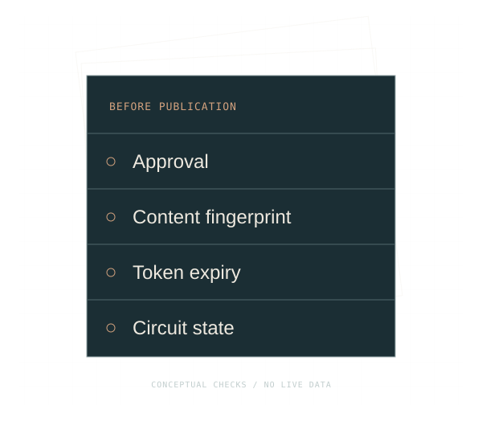

BACKEND ENGINEERING / WORKFLOW FOUNDATIONS
FrontageBackend systems.
Foundations for
content workflows.
A backend prototype with tenant-scoped database definitions, leased jobs, hash-linked audit events, and pure decision components. The public MIT extract contains the pure core; the broader private application remains separate.
View public pure core
- CONTEXT
- Independent, AI-assisted prototype
- FOCUS
- Tenant-scoped content workflows
- FOUNDATION
- PostgreSQL · pure decision logic
- EVIDENCE
- 34 new synthetic tests passed
Before a workflowmoves forward.
Content workflows involve decisions about tenancy, work ownership, approval, and publication. Frontage implements foundations for those concerns, alongside pure components that can be tested separately.
The project remains a backend prototype with unfinished application areas. Its public component extract covers content gates, media-ingest decisions, and publication checks; the database, queue, and audit foundations belong to the broader project.
Separate concerns.Define the rules.
These are implementation mechanisms, with database integration validation still outside the evidence described here.
TENANT CONTEXT
Scope database sessions.
The database layer defines transaction-local tenant context and row-level security policies.
BACKGROUND WORK
Lease jobs and handle retries.
A PostgreSQL queue uses
SKIP LOCKEDto claim ready work, with expired leases and retries.CONTENT AND PUBLICATION
Keep decision logic inspectable.
Pure components handle content gates, media-ingest decisions, and publication checks. Publication logic checks approval and an approved-content fingerprint, then token expiry and circuit-breaker state.
AUDIT RECORDS
Link event payloads with hashes.
Audit records use hash links between event payloads, connecting the records through their content.
Test the core.Name the limits.
The standalone frontage-pure-core extract passed 34 new synthetic tests, including image checks with Pillow 12.3. Its demonstration run also passed.
This is a new standalone suite, separate from the 122 original pure-core tests previously run in an unchanged, isolated copy of the broader prototype.
PostgreSQL, row-level security, queue, and audit integration were not executed. The evidence does not establish verified tenant isolation, a tamper-proof audit trail, working external integrations, or production readiness.
- Result
- 34 new synthetic tests passed
- Inputs
- Synthetic fixtures and Pillow 12.3 image checks
- Demo
- Standalone demonstration passed
- Public scope
- Content, media-ingest, and publication decision components
- GitHub CI
- Python 3.11 / 3.12 / 3.14 passed ↗
- License
- MIT · published pure-core extract
The new component suite and the earlier 122-test prototype run are distinct. Neither is end-to-end application validation.
An independent, AI-assisted implementation. The MIT license applies to the published pure-core extract only. The full private application and original test corpora, account connections, operational configuration, unreviewed data, business plans, and employer material are excluded from the release.